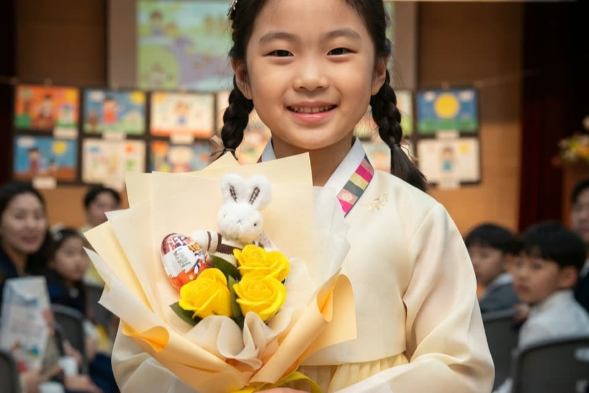
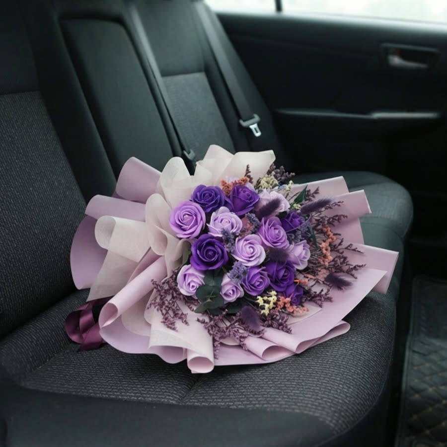
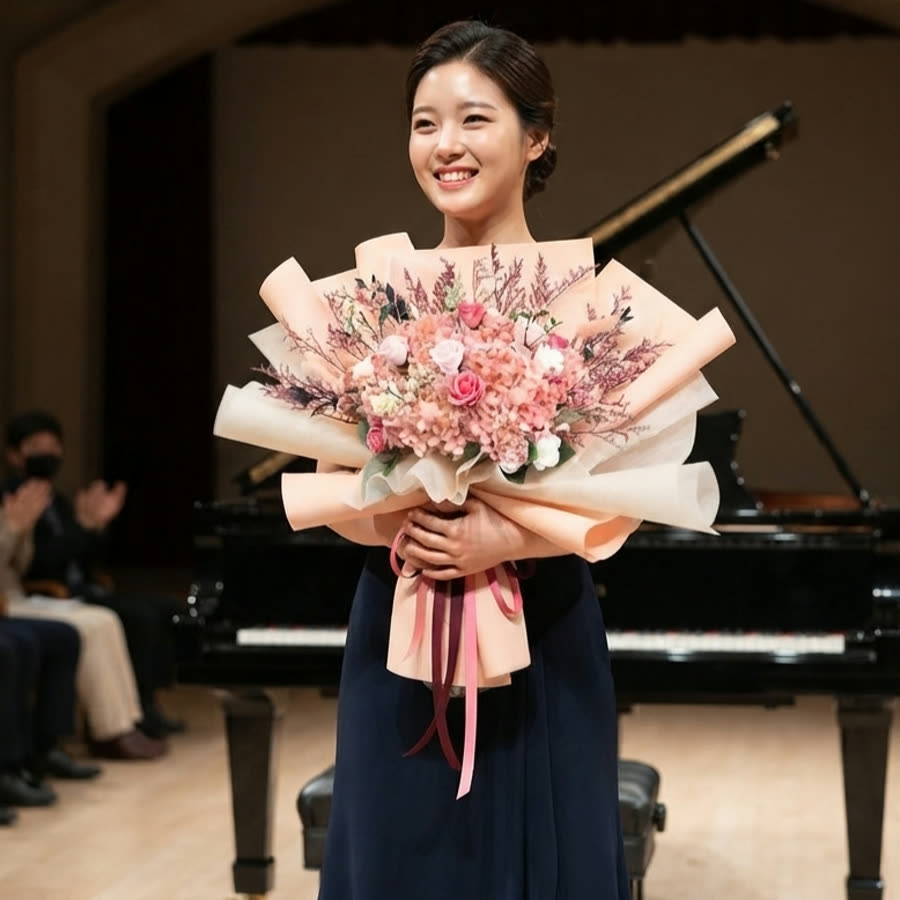
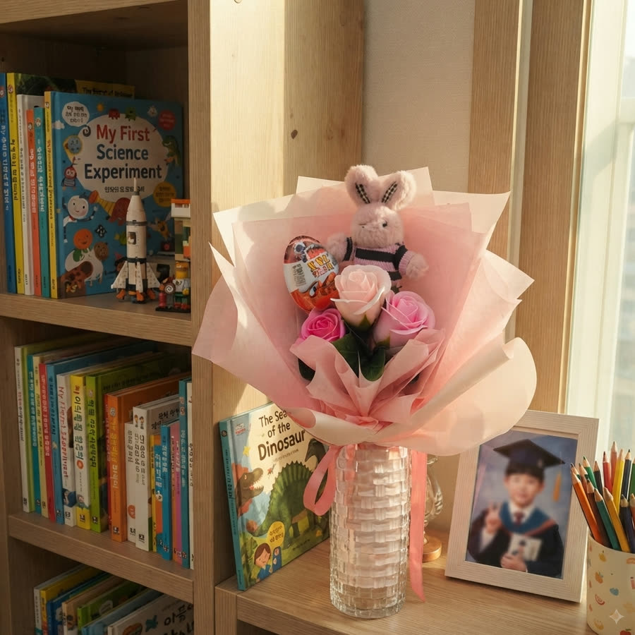

가을이 무르익으면 행사가 몰리기 시작합니다
11월, 12월이 되면 줄줄이 이어집니다. 학예회, 연주회, 재롱잔치. 해가 바뀌면 졸업식이 기다리고 있고요.
날짜는 몇 주 전부터 알고 있습니다. 그런데 꽃다발은 늘 전날이나 당일 아침에 챙기게 되죠. 생화를 고려하면 그렇습니다. 미리 사두면 시드니까 마지막까지 미룰 수밖에 없고, 그러다 보면 꽃집은 이미 붐비고 택배는 하루씩 밀립니다.
행사용으로 비누꽃 꽃다발을 찾는 분이 많은 건 이 순서를 바꿀 수 있어서예요.
일주일 전에 받아두고 잊어버려도 됩니다
비누꽃은 시들지 않습니다. 일주일 전에 받아 옷장 위에 올려두었다가 당일 꺼내도 받은 날 그대로예요.
이게 생각보다 큰 차이입니다. 택배가 하루 늦어도 괜찮고, 행사 전날 밤에 "꽃 샀나?" 하고 놀랄 일도 없어요.
포장에 신경 쓰는 것도 같은 이유입니다. 후기에 빠른 배송과 에어캡으로 꼼꼼히 감아 보낸다는 이야기가 자주 올라오는데, 행사 전에 상자가 상하면 다시 주문할 시간이 없으니까요.
보관은 까다롭지 않습니다. 직사광선만 피해서, 받은 포장 그대로 두시면 됩니다.
가는 길에 신경 쓸 게 하나 줄어듭니다
생화 꽃다발에는 물주머니가 달려 있습니다. 그래서 차에 실을 때 눕히지 못하고, 세워서 가다 보면 커브에서 넘어지죠. 여름엔 차 안 온도가 올라가고 겨울엔 반대로 얼기도 하니 에어컨도 히터도 신경 쓰이고요.
비누꽃 꽃다발에는 물이 없습니다. 뒷좌석에 그냥 실어두어도 되고, 아침에 미리 챙겨 나와도 괜찮아요. 꽃가루가 날리지 않아 실내 행사장에서도 편합니다.

꽃다발과 인형꽃다발, 어느 쪽인지부터 정하세요
테차 행사용 구성은 크게 두 가지입니다. 둘 다 비누꽃으로 만들지만 쓰이는 자리가 다릅니다.
- 비누꽃 꽃다발 — 받는 분 나이도 관계도 가리지 않습니다. 유치원·초등학교 졸업식은 물론이고 중고등학교나 대학 졸업식, 발표회, 연인이나 지인 선물까지 두루 씁니다.
- 인형꽃다발 — 꽃다발에 인형을 함께 엮은 구성입니다. 유치원생과 초등학생 선물로 나갑니다. 그 위 연령대에는 꽃다발 쪽을 권해드려요.
아이 행사라면 인형꽃다발 반응이 확실히 좋습니다. 아이들이 꽃보다 인형을 먼저 알아보거든요.
크기도 이유입니다. 행사 꽃다발은 결국 사진으로 남는데, 꽃다발이 크면 아이가 안았을 때 얼굴이 가려집니다. 축하하려고 산 꽃이 정작 주인공을 덮어버리는 거죠. 매장에서는 큰 게 좋아 보이는데, 사진을 보고 나서야 알게 됩니다.
테차는 아이가 두 팔로 안았을 때 얼굴이 나오는 크기를 기준으로 잡습니다. 트로피 모양 포트에 담은 구성은 세워서 들 수 있어 시상식 같은 장면이 나오고요.
받아보신 분들이 남기는 말 중에 실물이 사진보다 낫다는 이야기가 유난히 많습니다. 온라인으로 꽃을 고를 때 가장 걱정되는 부분이라 그런 것 같아요.

행사가 끝나고 나서가 진짜입니다
집에 돌아오면 꽃다발은 대개 식탁 위에 놓입니다. 며칠 지나면 시들기 시작하고, 어느 날 정리하게 되죠. 아이가 "이거 버려?" 하고 물으면 대답하기가 좀 그렇습니다.
비누꽃은 그 순간이 오지 않아요. 책장에 세워두면 그대로 있고, 인형은 따로 분리해 키링으로 쓸 수 있습니다. 연인이나 지인에게 드린 꽃다발이라면 침실이나 책상 위에 그대로 남고요.
후기에서 가장 자주 보이는 말도 결국 시들지 않는다는 이야기입니다. 계절이 바뀌어도 그대로라는 이야기가 이어져요.

향은 저희가 뿌려서 보냅니다
비누꽃 자체에는 향이 거의 없습니다. 만들어진 상태로는 냄새가 거의 나지 않아요.
테차는 보내기 전에 은은한 향을 살짝 뿌립니다. 상자를 열었을 때 꽃 향이 함께 올라오는 편이 선물 받는 기분에 가깝다고 봐서요. 후기에 향이 좋다는 말이 자주 보이는 것도 이 때문입니다.
다만 향에 예민한 분도 계시고, 행사장이 좁은 실내면 부담스러울 수 있어요. 원하지 않으시면 뿌리지 않고 보내드리니 주문하실 때 말씀만 해주세요.
자주 묻는 질문
Q. 며칠 전에 주문하면 될까요?
A. 배송 기간을 감안해 며칠 여유를 두시길 권해요. 미리 받아두어도 상태가 그대로라, 일정이 빠듯하다 싶으면 넉넉히 앞당기시는 편이 마음이 편합니다. 11월과 12월처럼 주문이 몰리는 때는 조금 더 일찍 잡아두세요.
Q. 여러 명에게 하나씩 돌리려면요?
A. 한송이·두송이 박스가 있어요. 투명 박스에 담겨 1만원 안팎이라 답례품이나 단체 선물로 많이 씁니다. 인원이 많을 때는 큰 것 몇 개보다 작은 것으로 개수를 맞추는 쪽이 현장에서 덜 번거로워요.
Q. 조화인가요?
A. 비누꽃은 비누를 꽃 모양으로 만든 소재예요. 시들지 않는 프리저브드(생화를 가공해 오래가게 만든 꽃)를 함께 넣어 만드는 구성이 많지만, 비누꽃만으로 완성하는 꽃다발도 있습니다.
정리하면
행사 꽃다발에서 신경 쓰이는 건 네 지점입니다. 언제 사둘지, 어떻게 들고 갈지, 사진에 어떻게 나올지, 끝나고 어떻게 할지.
비누꽃은 이 넷을 한꺼번에 덜어줍니다. 미리 사둬도 되고, 옮기기 편하고, 크기를 고를 수 있고, 끝나고도 남아요. 아이 행사라면 인형꽃다발을, 그 외에는 비누꽃 꽃다발을 보시면 됩니다.